Symbol Grimoire
Symbols
- 000
- 1
- 2
- 3
- 4
- 5
- 6
- 7
- 8
- 9
- 10
- 11
- 12
- 13
- 14
- 15
- 16
- 17
- 18
- 19
- 20
- 21
- 22
- 23
- 24
- 25
- 26
- 27
- 28
- 29
- 30
- 31
- 32
- 33
- 34
- 35
- 36
- 40
- 42
- 49
- 50
- 56
- 60
- 64
- 70
- 80
- 100
- 108
- 111
- 222
- 307
- 333
- 444
- 555
- 666
- 777
- 888
- 999
- 1000
- 10000
- Aaskouandy
- Abracadabra
- Adinkra Symbols
- Aegishjalmr
- Aesclepius Wand
- Agnus Dei
- Agriope Sigil
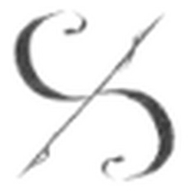
Agroterra Sigil- Akhet
- Akwaba
 Albus
Albus- All Seeing Eye
- Alpha and Omega
 Amissio
Amissio- Anchor
- Ankh
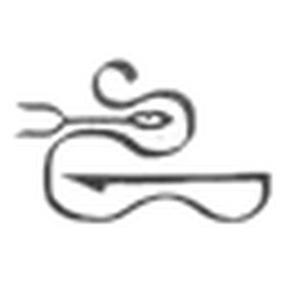
Apotropaia Sigil- Apotrope
 Aquisitio
Aquisitio- Arc
- Ark
- Arrow
- Ashlar
- Ashtamangala
- Astrum Argentum Seal
- Atalos Sigil
- Atheist Symbol
- Atlantean Cross
- Aum
- Aurobore Sigil
- Awen
- Axis Mundi
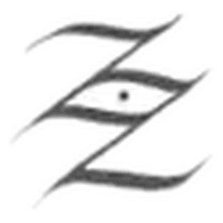
Azostos Sigil- Ba
- Backwards
- Beckoning Cat
- Bell, Book, and Candle
- Birth Bricks
- Birth Tusks
- Bismillah
- Black
- Black Cross
- Black Stone
- Black Sun
- Blazes and Trail Signs
- Blazing Star
- Blue
- Book
- Boukolos Sigil
- Breastplate of the High Priest
- Brighid's Cross
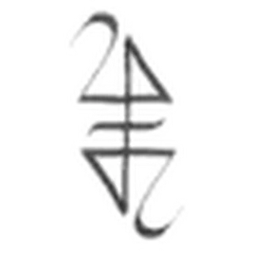
Brimo Sigil- Brown
- Bulla
- Caduceus
- Cagliostro Seal
- Cancellarius Seal
 Caput Draconis
Caput Draconis- Carcer
 Cauda Draconis
Cauda Draconis- Celtic Cross and Sun Cross
- Celtic Knotwork
- Chai
- Chaos Wheel
- Chess
- Choku Rei
- Cicatrix
- Cimaruta
- Circle
- Claddagh
- Clear
- Clockwise
- Club
- Columns, Jachin and Boaz
- Compasses and Square
 Conjunctio
Conjunctio- Coral
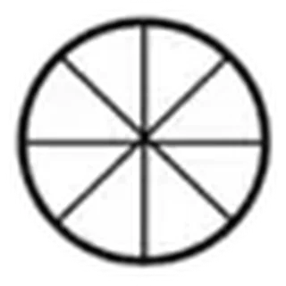
Corn Wheel- Cosmogram
- Counter-Clockwise
- Cowrie Shell
- Crescent Moon
- Crimson
- Cross
- Cross and Crown
- Crossed Keys
- Cross Lorraine
- Crossroads
- Crow's Foot
- Crucifix
- Crux Dissimulata
- Cube
- Da'wah
- Dadophorous Sigil
- Daruma
- Dearinth
- Degrees of Witchcraft
- Dharma Wheel
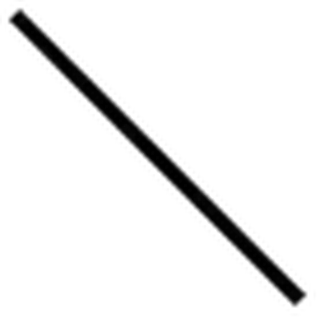
Diagonal- Diamond
- Djed
- Doorway
- Dot
- Double Happiness
- Dreamcatcher
- Dreidel
- Druze Star
- East
- Egg
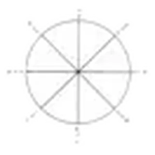
Eightfold Division of the Futhark- Elven Star
- Endless Knot
- Enneagram
- Enodia Sigil
- Enso
- Evangelists' Symbols
- Evil Eye
- Eye of Horus
- Falun Gong Symbol
- Farohar
- Fasces
- Feather
- Fetish
- Fibonacci Sequence
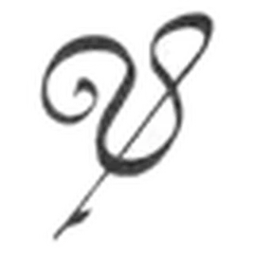
Fila Ton Skylon Sigil- Fisherman's Ring
- Five Pillars of Islam
- Fleur de Lys
- Flower of Life
 Fortuna Major
Fortuna Major- Fortuna Minor
- Forwards
- Fruit of Life
- Fu
- Fuchsia
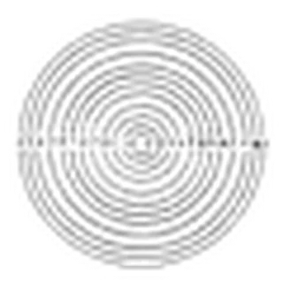
Futhark Pattern of Manifestation- Gammadion
- Gematria
- Globus Cruciger
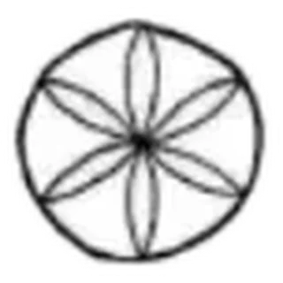
Glückstern- Gopura
- Greatest Name
- Great Seal of the United States
- Green
- Grey
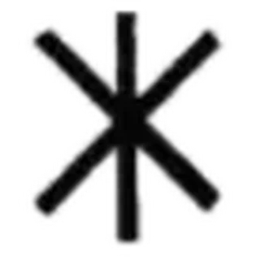
Hagall (World-Tree)- Halo
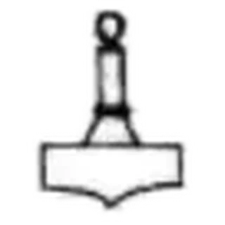
Hammer (Mjöllnir)- Hammer and Chisel
- Hamsa Hand
- Hand of Fatima
- Heart
- Heavenly Star
- Hekate's Crossroads Sigil
- Heraldry
- Hexagon
- Hexagram of Solomon
- Hex Signs
- Horizontal Line
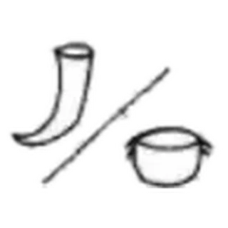
Horn (Caldron)- Horns of Odin
- Horseshoe
- Hourglass
- I Ching
- Ichthys
- Indalo
- Indigo
- Infinity
- Inverted Cross
- Invocation
- Iridescent
- Irminsul
- Ivory
- Jain Symbol
- Jerusalem Cross
- Kabbalah
- Kalachakra Seal
- Kamea
- Key
- Khanda
- Kleidophorous Sigil
- Knot
- Kourotrophos Sigil
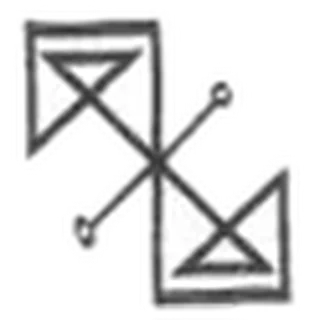
Kratais Sigil- Kundalini Serpent
- Labarum
- Labrys
- Labyrinth
- Ladder
 Laetitia
Laetitia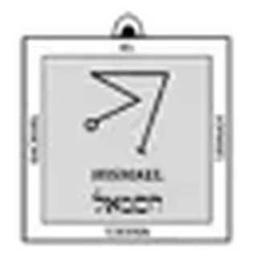
Lamen of Hismael- Lamen of Michael
- Latin Cross
- Lavender
- Left
- Level and Plumbline
- Leviathan Cross
- Lightening Bolt
- Lime Green
- Lingam
- Lion of Judah
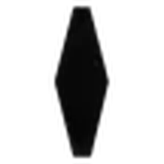
Lozenge- Magenta
- Magickal Name
- Magick Circle
- Magick Knot
- Magick Seal
- Magic Square
- Maltese Cross
- Man and Horse
- Mandala
- Mandorla
- Maneki Neko
- Man in the Maze
- Mani Stone
- Manji
- Mankolam
- Mano Cornuto
- Mano Fico
- Mantra
- Mark of the Beast
- Mark of the Bustard
- Maroon
- Maypole
- Medicine Wheel
- Menorah
- Merkaba
- Messianic Seal
- Metatron's Cube
- Miraculous Medal
- Monad
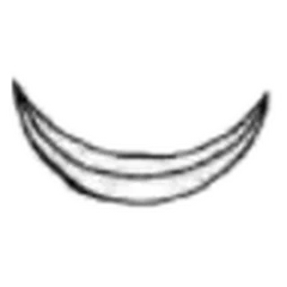
Moon (Runic)- Motley
- Name
- Navajo Sand Painting
- Ner Tamid
- Nictopolis Chthonie Sigil
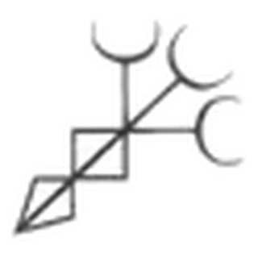
Noctiluna Sigil- North
- Northeast
- Northwest
- Notarikon
- Octagon
- Omamori
- Om Mani Padme Hum
- Omphalos
- Orange
- Orphic Egg
- Orthodox Cross
- Ouroboros
- Oval
- Paisley
- Palad Khik
- Palm Cross
- Pantous Cosmou Kleidochous Sigil
- Papal Cross
- Parasparopgraho Jivanam
- Pax Cultura
- Peace Sign
- Pentacle
- Pentagram
- Pentagram of Solomon
- Persian Rug
- Phileremos Sigil
- Philosopher's Stone
- Phosphoros Sigil
- Pink
- Point Within the Circle
- Pontos Riscados
 Populus
Populus- Propylaia Sigil
 Puella
Puella Puer
Puer- Purple
- Pythagorean Numerology
- Rainbow
- Raven Rune
- Rebis
- Rectangle
- Red
- Right
- Ringstone Symbol
- Roma Chakra
- Rose
- Rosy Cross
 Rubeus
Rubeus- Rule
- Runic Bracteate
- Sa
- Sacred Heart
- Saint Brigid's Cross
- Saltire
- Sator Square
- Scales
- Scallop Shell
- Scarlet
- Scientology Cross
- Scientology Symbol
- Scotia Sigil
- Seal of Shamash
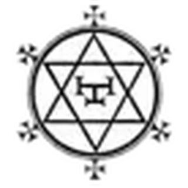
Seal of Solomon- Seal of the Knights Templar
- Secret of Hermes
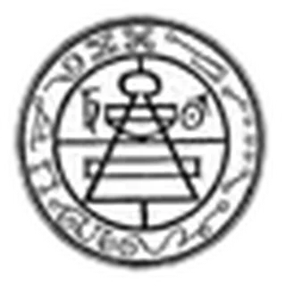
Secret Seal of Solomon- Seed of Life
- Sefer Yetzirah Symbol
- Septagon
- Serpent Cross
- Sheela Na Gig
- Shen
- Shield Knot
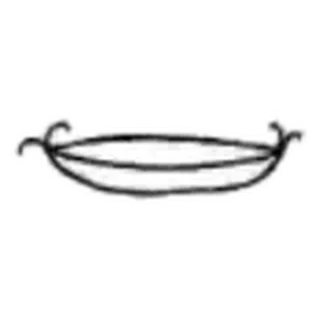
Ship- Shou
- Sigil
- Sigil of Ameth
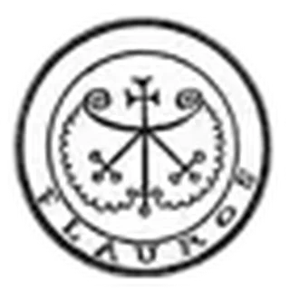
Sigil of Flauros- Sigil of Lucifer
- Signs of a Magician
- Skull and Crossbones
- Skylakitin Sigil
- Smaragdina Tablet
- Smoke Signals
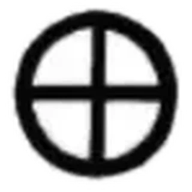
Solar Wheel- Solomon's Knot
- Soteira Sigil
- South
- Southeast
- Southwest
- Space
- Spade
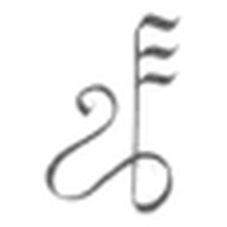
Speirodrakontozonos Sigil- Spiral
- Square
- Square of Mars
- Square of Mercury
- St Andrew's Cross
- Star
- Star and Crescent
- Star of Lakshmi
- Stonemasons' Marks
- St Peter's Cross
- Strophalos
- Sufi Winged Heart
- Sun Cross
- Sun sign
- Sunwheel
- Tan
- Tattvas
- Tau Cross
- Teal
- Temurah
- Tetragrammaton
- Tetraktys
- Tetramorphs
- Thea Deinos Sigil
- Theosophical Society
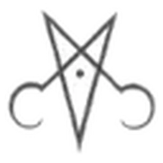
Therebromon Sigil- The Witches' Pyramid
- Tilaka
- Tiratana
- Tomoe
- Torii
- Totem
- Tracing Board
- Tree of Life
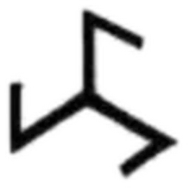
Trefot- Triangle
- Triangle of Manifestation
- Trident
- Triple Moon
- Tripod of Life
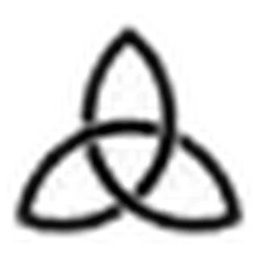
Triquetra- Triregnum
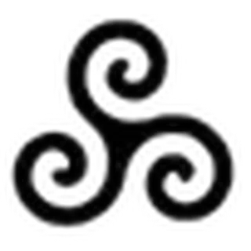
Triskele Tristitia
Tristitia- Trisula
- Troll Cross
- Tyet
- Udyjat
- Umbraculum
- Unicursal Hexagram
- Unification Church Symbol
- United States Dollar Bill
- 0
- Uraeus
- Urim and Thummim
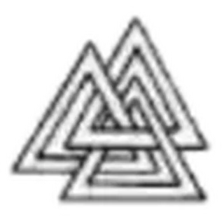
Valknutr- Vassago's Sigil
- Vertical Line
 Via
Via- Vitriol
- Voudon Veves
- Watermark
- West
- Wheel
- White
- Wings
- Wisdom Eyes of Buddha
- Witch's Knot
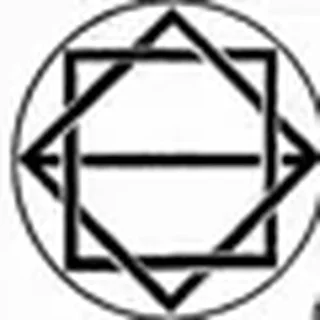
Witches' Drum Symbol- Wreath
- Yab Yum
- Yantra
- Yellow
- Yin Yang
- Y of Pythagoras
- Zia Pueblo Sun Symbol
- Zig-Zag
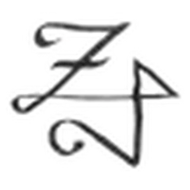
Zootrophos Sigil- Zoso